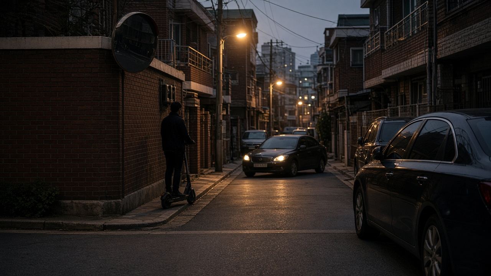
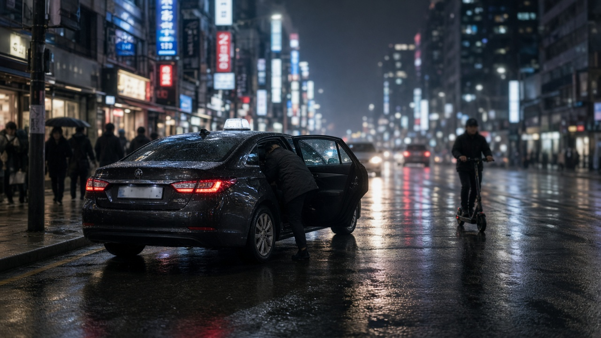
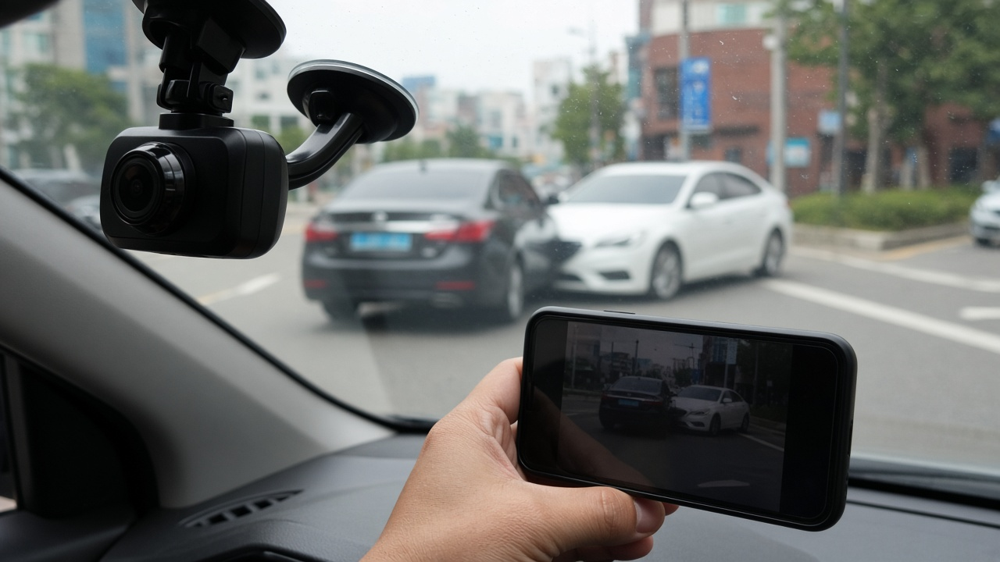

전동킥보드로 80번 일부러 부딪친 자동차 보험사기, 골목과 택시 하차 구간에서 합의부터 하면 안 되는 이유

골목을 빠져나오다 갑자기 튀어나온 전동킥보드와 살짝 부딪혔는데, 상대가 바로 현금으로 끝내자고 하면 당황스럽죠.
내가 잘못한 것 같기도 하고 보험 처리하면 할증이 걱정돼서 그냥 돈을 주고 싶어지는 순간이에요.
그런데 금융감독원이 11월 18일 공개한 자동차 보험사기 기획조사 결과를 보면, 바로 이런 심리를 노린 고의 사고가 실제로 반복되고 있었어요.
어떤 수법이 적발됐는지, 운전자는 사고 현장에서 무엇부터 해야 하는지 차례로 정리해 볼게요.
전동킥보드로 80번 부딪친 수법은 무엇이었나요?
금융감독원 조사에 따르면 한 혐의자는 전동킥보드로 달리는 차에 일부러 닿는 방식으로 오랜 기간 모두 80차례 사고를 냈어요.
주택가 골목처럼 운전자 시야가 가려지는 곳에서 기다리다가 차가 진로를 바꾸거나 골목을 빠져나오는 순간 킥보드를 부딪쳤다고 해요.
붐비는 곳에서 택시가 손님을 내려 주려고 멈춘 뒤 뒷문이 열리는 순간 차 뒤쪽에 부딪히는 방법도 썼어요.
부딪친 직후에는 그 자리에서 현금 합의를 요구하고, 합의가 안 되면 병원 진단서를 받아 보험사에 대인과 대물 보험금을 청구했어요.
금융감독원은 자동차손해배상진흥원과 함께 비슷한 사고가 되풀이되고 특정 지역과 야간에 몰린 점을 확인해 경찰에 수사를 의뢰했어요.

음주운전 의심 차량을 노린 사고는 어떻게 일어났나요?
도로에서 신호 위반 같은 이상한 주행을 하는 차를 발견하면 뒤쫓아 가다가, 그 차가 차선을 바꾸는 순간 급하게 속도를 올려 일부러 들이받는 방식이었어요.
고속도로에서 옆 차의 사각지대까지 바짝 붙었다가 차선 변경 순간 사고를 만드는 경우도 있었어요.
음주 사실이 드러나면 처벌을 받을까 봐 운전자가 쉽게 합의에 응한다는 약점을 이용한 거예요.
일부는 여럿이 무리를 지어 가해 운전자, 피해 운전자, 동승자로 역할을 바꿔 가며 비슷한 사고를 냈고, 금융감독원은 미리 짜고 한 정황을 확인해 경찰에 통보했어요.
보험사기로 실형을 살고 나온 뒤에도 같은 수법으로 20여 차례 고의 사고를 낸 사람까지 확인됐다고 하니, 한 번 적발됐다고 끝나는 문제가 아니라는 점도 알 수 있어요.
입원하고도 대리운전과 택시 영업을 한 사례는 왜 문제인가요?
가벼운 접촉사고로 입원한 뒤에도 계속 대리운전을 하면서 입원을 핑계로 합의금과 보험금을 받은 대리기사들이 적발됐어요.
상당수는 입원 기간에 심야 운행을 되풀이했고, 같은 사람이 여러 번 거짓 입원을 한 경우도 많았다고 해요.
개인택시 기사 한 명은 가벼운 사고로 네 번에 걸쳐 모두 23일 입원했는데, 그중 14일 동안 모두 36시간 영업을 했어요.
다른 택시 기사는 택시 영업에만 쓸 수 있는 유가보조금 카드를 입원 기간에 10번 넘게 썼어요.
거짓 입원은 보험사기방지 특별법 위반, 유가보조금 부정 수급은 여객자동차 운수사업법 위반 혐의로 각각 경찰에 통보됐어요.
금융감독원은 입원 중에 일을 하면서 입원 보험금과 합의금을 받으면 그 자체로 보험사기가 될 수 있다고 분명히 안내하고 있어요.

사고가 이상하다 싶을 때 현장에서는 무엇부터 해야 하나요?
가장 중요한 원칙은 경찰과 보험사에 알리기 전에는 상대와 합의하지 않는 거예요.
갑작스러운 끼어들기나 이유 없는 급정거처럼 일부러 낸 사고가 의심되면 블랙박스 영상과 현장 사진, 목격자 진술부터 확보해 두세요.
상대 차량이나 킥보드의 특징과 상대방의 인적 사항도 꼭 적어 두는 게 좋아요.
현금으로 빨리 끝내자는 말에 응하면 나중에 고의 사고였다는 점을 밝히기 어려워질 수 있으니, 내 보험사에 사고 접수부터 하는 편이 안전해요.
시야가 가려지는 골목 진입로와 택시가 손님을 태우고 내리는 구간은 이런 사고가 나기 쉬운 곳이라 미리 속도를 줄이고 주변을 한 번 더 살피는 습관이 도움이 돼요.
보험사기가 의심되면 어디에 알리면 되나요?
보험사기가 의심되는 사고를 겪었거나, 쉽게 돈을 벌 수 있다며 사고를 꾸미자는 제안을 받았다면 금융감독원 보험사기 신고센터에 알릴 수 있어요.
전화는 국번 없이 1332이고, 금융감독원 누리집에서도 신고할 수 있으며 가입한 보험회사에 알려도 돼요.
금융감독원은 자동차 보험사기를 계속 지켜보면서 비슷한 유형을 찾아내겠다고 밝혔어요.
남의 일 같아도 운전대를 잡는 사람이라면 누구나 표적이 될 수 있으니, 합의보다 증거가 먼저라는 것 하나만 기억해 두셔도 큰 손해를 막을 수 있어요.
참고 자료 금융감독원 2026년 11월 18일 보도자료 전동킥보드로 사고 내고 음주운전 차량 표적 사고 유발까지 자동차 보험사기 이렇게 예방하세요, 연합뉴스와 한겨레 2026년 11월 18일 보도
태그 자동차보험사기 보험사기 전동킥보드사고 고의사고 교통사고합의 블랙박스 허위입원 금융감독원 보험사기신고 1332